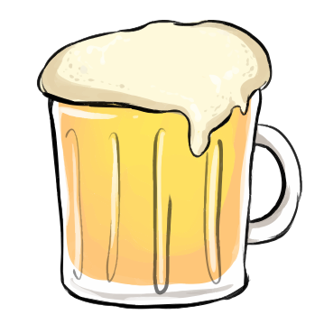
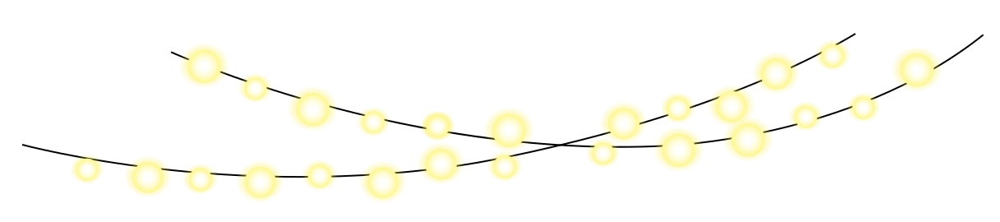
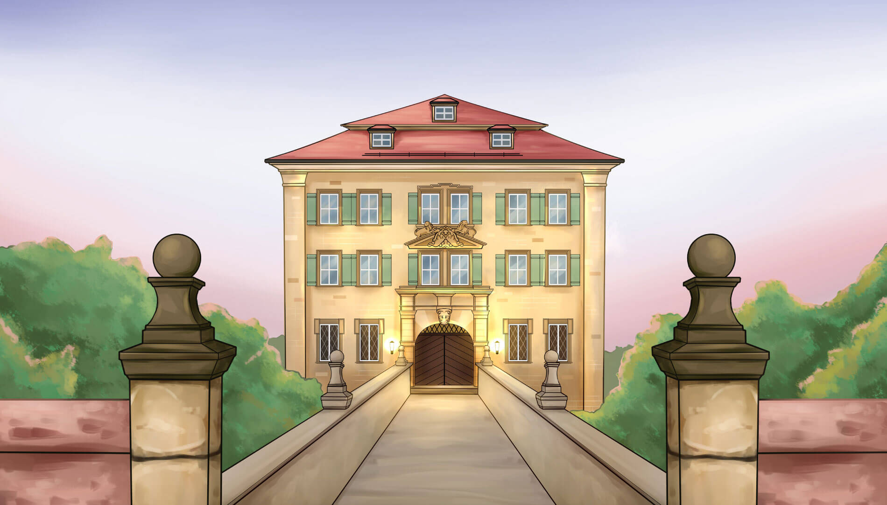
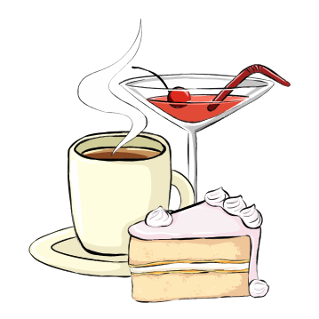
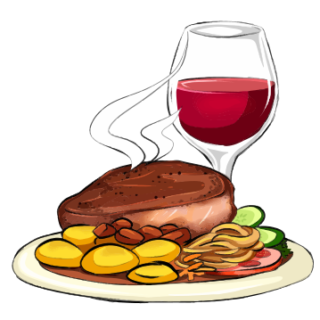
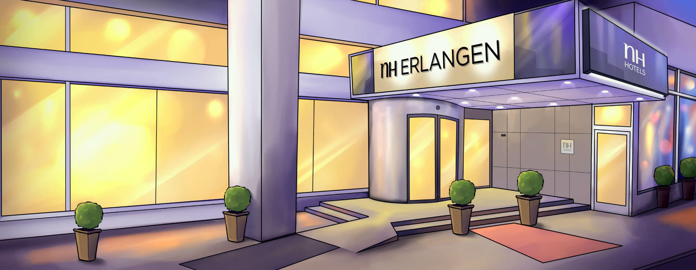
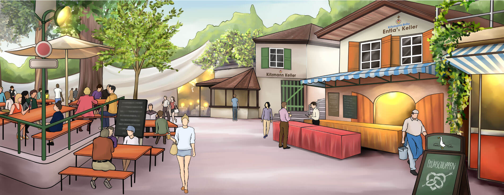

<!DOCTYPE html>
<html>
    <head>
        <title>Work Sample</title>
        <meta charset="UTF-8">
        <meta name="viewport" content="width=device-width, initial-scale=1.0">
        <!-- Latest compiled and minified CSS -->
        <link rel="stylesheet" href="https://maxcdn.bootstrapcdn.com/bootstrap/3.3.5/css/bootstrap.min.css">
        <link rel="stylesheet" href="https://cdnjs.cloudflare.com/ajax/libs/chosen/1.4.2/chosen.min.css">
        <link href='http://fonts.googleapis.com/css?family=Amatic+SC:400,700' rel='stylesheet' type='text/css'>
        <link href='http://fonts.googleapis.com/css?family=Josefin+Sans:600' rel='stylesheet' type='text/css'>
        <link rel="stylesheet" href="css/style.css">
        <script src="http://code.jquery.com/jquery-1.11.3.min.js"></script>
        <script>

            $(document).ready(function () {
                $('body').jpreLoader();

            });
            $(window).load(function () {
                $('#jpreOverlay').hide();
            });

        </script>
    </head>
    <body>
        <div class="loader">
            
        </div>
        <!--navba-->
        <nav class="navbar navbar-default">
            <div class="container-fluid">
                <!-- Brand and toggle get grouped for better mobile display -->
                <div class="navbar-header">
                    <button type="button" class="navbar-toggle collapsed" data-toggle="collapse" data-target="#bs-example-navbar-collapse-1" aria-expanded="false">
                        <span class="sr-only">Toggle navigation</span>
                        <span class="icon-bar"></span>
                        <span class="icon-bar"></span>
                        <span class="icon-bar"></span>
                    </button>
                </div>

                <!-- Collect the nav links, forms, and other content for toggling -->
                <div class="collapse navbar-collapse" id="bs-example-navbar-collapse-1">

                    <ul class="nav navbar-nav navbar-right">
                        <li><a href="#the-party">THE PARTY</a></li>
                        <li><a href="#night-after">NIGHT AFTER</a></li>
                        <li><a href="#day-after">DAY AFTER</a></li>
                        <li><a href="#rsvp">RSVP</a></li>
                    </ul>
                </div><!-- /.navbar-collapse -->
            </div><!-- /.container-fluid -->
        </nav>

        <section id="title-image">
            <div class="container">

            </div>
        </section>
        <section class="sec-1">
            <div class="container">
                <div class="row box">
                    <div class="col-sm-7 col-xs-offset-0 col-xs-12" style="float:none;margin: 0 auto;">
                        <div class="row part1down">
                            <div class="col-sm-12 text-center">
                                <div class="img-1 text-center">
                                    
                                </div>
                                <div class="row">
                                    <div class="col-sm-12" style="float: none;">
                                        <div class="yes-finally">
                                            
                                            
                                        </div>
                                    </div>
                                </div>
                                <div class="m-t-sm">
                                    <h2>THE POLTERWEEKEND</h2>
                                    <h2 style="margin-top: -20px;">AUGUST 21 - 22, 2015</h2>
                                </div>
                            </div>
                        </div>

                        <div class="row part2down">
                            <div class="col-sm-12 text-center">
                                <p>Break some porcelain to bring luck to Karen and Michael’s marriage!</p>
                            </div>
                            <div class="col-sm-6 text-center">
                                
                                <div class="content content-1">
                                    <h3>POLTERABEND</h3>
                                    <p>Starts at 6 PM on Friday, August 21, at the Atzelsberg Castle, Atzelsberg 1, 91080 Marloffstein.</p>
                                </div>
                            </div>
                            <div class="col-sm-6 text-center">
                                
                                <div class="content  content-2">
                                    <h3>Frühschoppen</h3>
                                    <p>Starts at 1 PM on Saturday, August 22, at the Entla’s Keller beer garden, Cellar 5, 91054 Erlangen.</p>
                                </div>
                            </div>
                        </div>

                    </div>
                </div>
            </div>
        </section>
        <section class="sec-2" id="the-party">
            
            <div class="container-fluid">
                <div class="row">
                    <div class="col-sm-12 part3down  padding-0">                        
                        
                        
                        
                        
                        
                        
                        
                    </div>
                </div>
            </div>
        </section>

        <section class="sec-3">
            <div class="container">
                <div class="row box part4down">
                    <div class="col-sm-12 text-center part-title">
                        <h3>THE LOCATION</h3>
                        <h2>SCHLOSS ATZELSBERG</h2>
                    </div>
                    <div class="col-sm-8">
                        <p>Our Polterabend starts with "Kaffee und Kuchen" at 6 PM. A long-standing German tradition, 
                            "Kaffee and Kuchen" is an afternoon social gathering around a piece of cake and a hot steaming cup of coffee or tea. </p>
                        <p>Just before sunset at 8 PM, we all gather in front of the Castle's barn, ready to smash old plates, bowls, and cups. The smashing of china is the highlight of a traditional Polterabend. Watch Karen and Michael demonstrate their amazing teamwork as they sweep up all the shards! </p>
                        <p>After Karen and Michael clean up the smashed porcelain, we all head to the Castle's banquet hall at 9 PM to enjoy a Franconian dinner. After dinner, DJ Marcus (Franconia's most sought-after DJ!) spins hip hop for Michael and EDM for Karen. </p>
                        <p>Gepoltert wird nach alter Sitte <br>
                            Drum, Freunde, höret unsere Bitte: <br>
                            Lasst Glas, Müll und Schrott zurück, Nur richt'ge Scherben bringen Glück!</p>
                    </div>
                    <div class="col-sm-4">
                        <div class="row">
                            <div class="col-sm-12">
                                <ul class="media-list media-list1">
                                    <li class="media">
                                        <div class="media-left">
                                            
                                        </div>
                                        <div class="media-body">
                                            <h2 class="media-heading">6 PM :: KAFFEE AND KUCHEN</h2>
                                            <span>Coffee and cake (and 
                                                cocktails) on the lawn of the Atzelsberg Castle </span>
                                        </div>
                                    </li>
                                    <li class="media">
                                        <div class="media-left">
                                            
                                        </div>
                                        <div class="media-body">
                                            <h2 class="media-heading">8 PM :: POLTERN</h2>
                                            <span>Group smashing of plates, 
                                                bowls, and cups in front of the Castle’s barn </span>
                                        </div>
                                    </li>
                                    <li class="media">
                                        <div class="media-left">
                                            
                                        </div>
                                        <div class="media-body">
                                            <h2 class="media-heading">9 PM :: ESSEN UND TRINKEN</h2>
                                            <span>Franconian dinner and wine 
                                                at the Atzelsberg Castle’s 
                                                banquet hall </span>
                                        </div>
                                    </li>
                                    <li class="media">
                                        <div class="media-left">
                                            
                                        </div>
                                        <div class="media-body">
                                            <h2 class="media-heading">10 PM :: FEIERN</h2>
                                            <span>DJ Marcus in the house, 
                                                spinnin’ hip hop for Michael 
                                                and EDM for Karen </span>
                                        </div>
                                    </li>
                                </ul>
                            </div>
                        </div>
                    </div>
                </div>

            </div>
        </section>
        <section class="sec-4" id="night-after">
            
            <div class="container-fluid">
                <div class="row">
                    <div class="col-sm-12 part5down padding-0">
                        
                    </div>
                </div>
            </div>
        </section>
        <section class="sec-5">
            <div class="container">
                <div class="row box" style="margin-top: 40px;">
                    <div class="col-sm-6">
                        <p>We have reserved rooms at NH Erlangen, 13 minutes away by taxi from the Atzelsberg Castle.</p>
                        <p>Room costs 66.75 EUR per night, including taxes but not breakfast. You can reserve a room at this rate using the link below until July 23.</p>
                    </div>
                    <div class="col-sm-6">
                        <p>For guests traveling to Erlangen, we suggest arriving on Friday afternoon, Aug 21, and leaving on Sunday morning, Aug 23.</p>
                        <p>You can fly into one of three airports: Nuremberg (NUE), 20 minutes by car; Munich (MUC), 1.5 hours away by car, or Frankfurt (FRA), 2 hours away by car.</p>
                    </div>
                    <div class="col-sm-12 text-center">
                        <h3>BOOK NOW >></h3>
                    </div>
                </div>
            </div>
        </section>
        <section class="sec-6" id="day-after">
            
            <div class="container-fluid">
                <div class="row">
                    <div class="col-sm-12 part6down  padding-0">
                        
                    </div>
                </div>
            </div>
        </section>
        <section class="sec-7">
            <div class="container">
                <div class="row box">
                    <div class="col-sm-12 text-center part-title">
                        <h3>THE LOCATION</h3>
                        <h2>ENTLA'S KELLER</h2>
                    </div>
                    <div class="col-sm-6">
                        <p>Be at Entla’s Keller, an Erlangen favorite, at 1 PM on Saturday. Frühschoppen, plus a special tour of Entla’s beer cellar, await. </p>
                        <p>Frühschoppen (meaning: an alcoholic drink before midday in </p>
                    </div>
                    <div class="col-sm-6">
                        <p>company) is the German and Austrian tradition to meet up at a 
                            pub in the late morning, traditionally held after church service on Sundays. Frühschoppen is often a kind of brunch, involving the consumption of alcoholic beverages.</p>
                    </div>
                </div>
            </div>
        </section>
        <section class="sec-8" id="rsvp">
            
            
            <div class="container-fluid">
                <div class="row">
                    <div class="col-sm-12 part7down  padding-0">
                        <div class="container">
                            <div class="row box">
                                <form class='form-styled m-t-sm' action="rsvp.php" method="POST">
                                    <div class="col-sm-4">
                                        <input type='text' placeholder="Your Name" class='input' name="name">
                                    </div>
                                    <div class="col-sm-4">
                                        <input type='email' placeholder="Your Email" class='input' name="email">
                                    </div>
                                    <div class="col-sm-4">
                                        <select class='input'  name="guest_no">
                                            <option value="">No. of Guests (including yourself)</option>
                                            <option value="1">1</option>
                                            <option value="2">2</option>
                                            <option value="3">3</option>
                                        </select>
                                    </div>
                                    <div class="result col-sm-12"><div class="alert notification alert-success" style="display: none;">Hurra, die Anmeldung ist raus. Wir freuen uns! :)</div> </div>
                                    <div class="col-sm-12 text-center m-t-sm">
                                        <button type="submit" class="button btn-primary">SUBMIT</button>
                                    </div>
                                </form>
                                <div class="col-sm-12 m-t-md">
                                    <div class="row">
                                        <div class="col-sm-10 col-sm-offset-1 col-md-8 col-md-offset-2 col-lg-6 col-lg-offset-3">
                                            <div class="row">
                                                <div class="col-sm-6 text-center">
                                                    
                                                    <p class='m-t-sm'>party@karenmichael.com</p>
                                                </div>
                                                <div class="col-s-6 text-center">
                                                    
                                                    <p class='m-t-sm'>+49 15901048528</p>
                                                </div>
                                            </div>
                                        </div>
                                    </div>
                                </div>
                            </div>
                        </div>
                    </div>
                </div>
            </div>
        </section>
        <section class="sec-9">
            <div class="container-fluid">
                <div class="row">
                    <div class="col-sm-12 padding-0" id='map-wrap'>

                    </div>
                    <div class="col-sm-12 text-center footer toTop">
                        <span class="glyphicon glyphicon-heart"></span>
                    </div>
                </div>
            </div> 
        </section>
        <!--<div id="jpreOverlay" style="position: fixed; top: 0px; left: 0px; width: 100%; height: 100%; z-index: 9999999;"><div id="jpreSlide" style="position: absolute; top: 35%; left: 0%;"></div><div id="jpreLoader" style="position: absolute; top: 45%; left: 46%;"><div id="jpreBar" style="width: 0%; height: 100%; overflow: hidden;"></div><div id="jprePercentage" style="position: relative; height: 100%;">0%</div><div id="jpreButton" style="position: relative; height: 100%; display: none;">Start!</div></div></div>-->


        <script src="https://maxcdn.bootstrapcdn.com/bootstrap/3.3.5/js/bootstrap.min.js"></script>
        <script src="//cdnjs.cloudflare.com/ajax/libs/gsap/1.15.1/TweenMax.min.js"></script>
        <script src="//cdnjs.cloudflare.com/ajax/libs/ScrollMagic/2.0.5/ScrollMagic.js"></script>
        <script src="js/animation.gasp.js"></script>
        <script src="js/jpreloader.min.js"></script>
        <script src="//cdnjs.cloudflare.com/ajax/libs/ScrollMagic/2.0.5/plugins/debug.addIndicators.min.js"></script>
        <script src="//cdnjs.cloudflare.com/ajax/libs/chosen/1.4.2/chosen.jquery.min.js"></script>
        <script src="//cdnjs.cloudflare.com/ajax/libs/jquery-validate/1.14.0/jquery.validate.min.js"></script>
        <script src="//cdnjs.cloudflare.com/ajax/libs/jquery-validate/1.14.0/additional-methods.min.js"></script>
        <script src="js/main.js"></script>
        <script src="js/js.js"></script>
        <script src="https://maps.googleapis.com/maps/api/js?v=3.exp&signed_in=true"></script>
        <script src="js/map.js"></script>
        <script src="js/custom.js"></script>

    </body>
</html>

